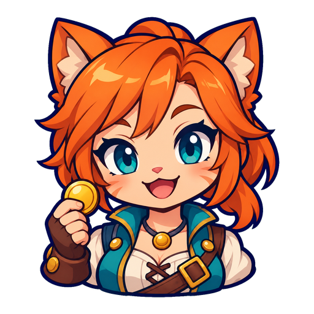

선장
헤이븐 원정대의 현장 지휘관. 지구에 남은 삶을 지키기 위해 직접 싸우고 식민지를 늘린다.
Narrative / 03 — Project Haven
하늘에 나타난 또 하나의 지구.
행성을 개척하고 에너지를 보내, 두 세계의 겹침을 막는다.
STORY PLAN · 2026.10.14
01 / Project Haven
“첫 송신, 확인됐어요.
지구에 닿고 있습니다.”첫 안정화 기기 가동 후 · 부관 미나
지구의 하늘에 다른 대륙과 도시가 비치기 시작했다. 같은 자리에 겹쳐지는 또 하나의 세계, ‘그림자 지구’. 정전과 중력 이상이 일어나지만, 사람들은 여전히 이곳에서 살아간다.
인류가 건설한 중계기 헤이븐은 에너지를 모아 두 세계를 밀어낸다. 지구의 전력만으로는 부족하다. 선장은 행성에 식민지를 세운 뒤 안정화 기기를 직접 건설해 헤이븐으로 첫 송신을 시작하는 원정을 떠난다.
균열의 연결점은 여러 항성계에 걸쳐 있다. 그곳에 송신망을 구축해야 간섭을 줄일 수 있다. 태양계에서 시작한 원정은 다른 은하와 미지의 영역으로 이어진다.
헤이븐 원정대의 현장 지휘관. 지구에 남은 삶을 지키기 위해 직접 싸우고 식민지를 늘린다.
항로와 송신을 확인하고, 지구의 소식을 전한다. 다시 문을 연 학교, 돌아온 불빛이 원정의 성과를 보여준다.

자원과 승무원, 버프를 공급한다. 해적은 생산 거점과 송신 설비를 노리는 약탈자로 원정을 위협한다.
02 / Scene reader
오프닝 3장면 · 첫 정착 3장면 · 워프 준비 2장면
헤이븐 계획의 대사 초안입니다. 안정화 기기와 완성도 계산은 구현됐으나 이 장면들은 앱 미반영이며, 송신 에너지·지구 상태를 계산하는 시스템은 없습니다.
03 / Story into play
| 현재 플레이 목표 | 새 서사에서의 의미 |
|---|---|
| 소행성 3개 | 첫 송신 거점의 건설 자원 |
| 직접 해적 3척 격추 | 거점 주변 위협 제거 |
| 아무 행성 1곳 정착 | 첫 송신 준비. 안정화 기기를 별도로 세운 뒤 송신 시작 |
| 함선 개조 1회 | 원정 전력 강화 |
| 승무원 1명 | 확장에 필요한 동료 |
| 게시판 임무 1건 | 원정 운영 자금 |
| 정거장 총 2개 | 역할에 맞는 보급·수리·방어 지원 |
| 안정화 기기 레벨 합계 = 행성 수 × 3 | 완성도 100%와 다음 게이트 개방. Lv.4·5도 전부 합산 |
| 첫 워프 | 다음 항성계의 연결점으로 진출 |
안정화 기기는 별도 건물이며 식민지 레벨이 건설 상한(최대 5)을 정합니다. 완성도는 실제 기기 레벨 합계 ÷ (행성 수 × 3), 최대 100%입니다. 기기 HP는 레벨마다 150 × sectorMul씩 누적되고, 방어막을 깨는 공격은 전부 방어막이 흡수합니다. 돔이 내려간 뒤 후속 피격으로 기기 HP 경계가 줄면 레벨도 내려가고, 0이면 파괴됩니다. 자동 재생 없이 유료 건물 업그레이드로 재건합니다. HP·방어막은 저장되며, 옛 저장에는 기기 인덱스가 없을 때 min(식민지 레벨, 3)을 한 번 부여합니다. 다른 건물과 식민지 습격 레벨 하락은 그대로이고, 이미 방문한 항로도 열린 상태를 유지합니다. 이 규칙은 구현됐지만 송신 에너지·지구 피해 시뮬레이션은 없으며 장면은 기획 초안입니다. 두목 처치는 게이트 조건이 아닙니다.
04 / A wider network
지구의 회복을 보여주며
더 먼 연결점으로 나아간다.
첫 안정화 기기의 송신으로 일상이 조금씩 회복된다. 태양계 안정화 완료 후 중력 이상이 잦아들고, 항성계 밖의 연결점이 발견된다.
균열은 여러 항성계에 연결되어 있다. 지역마다 분산 송신망을 만들어 간섭을 억제하고 지구를 지원한다.
여러 지역의 힘이 모여 회복되는 일상의 범위가 넓어진다. 이미 이룬 성과를 취소하며 멸망 직전으로 되돌리지 않는다.
관측 범위가 넓어지면서 다른 은하의 연결점을 확인한다. 새로운 송신 거점을 확보할 목적이 이어진다.
마젤란, 안드로메다, 삼각형자리, 미지의 영역으로 확장한다. 궁극적 목표는 두 세계의 연결을 끊는 것. 현재 게임에는 최종 승리 판정이 없으며 완결 조건은 후속 설계 대상이다.
기존 원정 초기화와 영구 성장 보존을 명확히 안내한다. 지구 멸망이나 송신망 철거를 필수 이야기 사건으로 붙이지 않는다. 미접속에 따른 지구 멸망 시간제한도 두지 않는다.